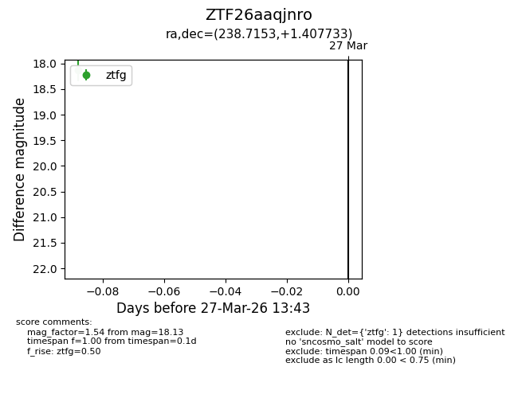
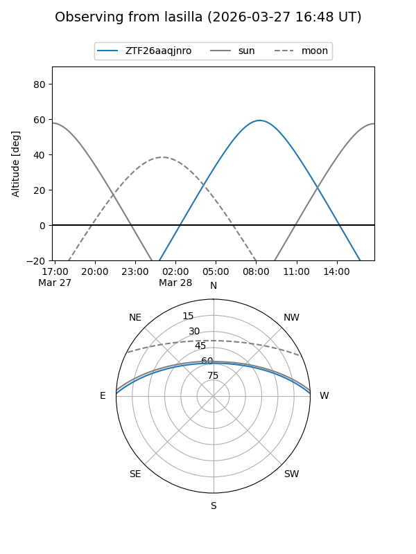
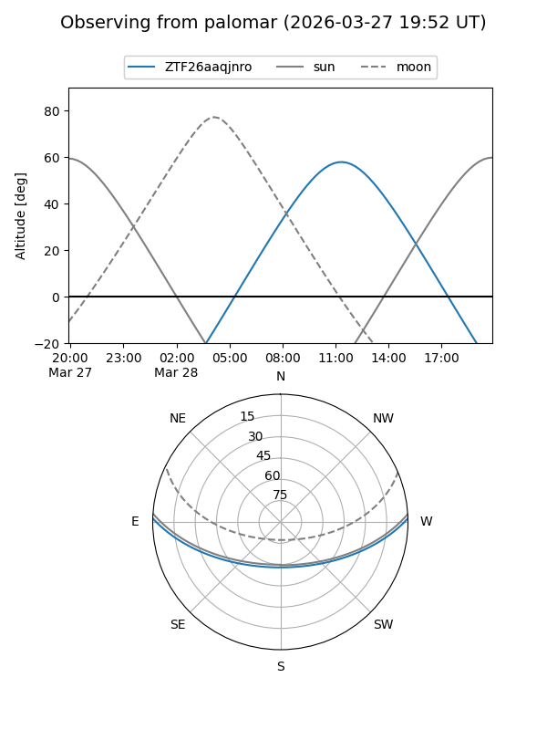

ZTF26aaqjnro
Target ZTF26aaqjnro at 2026-03-27 13:45
Aliases and brokers:
FINK: link
Lasair: link
ALeRCE: link
alt names
ZTF26aaqjnro (ztf,fink_ztf)
Coordinates:
equatorial (ra, dec) = 238.7153,+1.40773
equatorial (HMS+DMS) = 15:54:51.66,+01:24:27.84
galactic (l, b) = (10.5362,+39.11376)
Flags:
Photometry:
last ztfg=18.13
1 ztfg detections
Lightcurve

Visibility


Additional plots